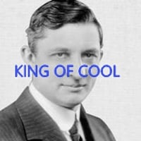

무더운 여름은 잘 보내셨는지요
저에 대한 음해가 인터넷에 상당히 많더군요
하지만 괜찮습니다. 여러분들이 시원하셨다면요
전 이만 가보겠습니다
내년에 뵙겠습니다
무더운 여름은 잘 보내셨는지요
저에 대한 음해가 인터넷에 상당히 많더군요
하지만 괜찮습니다. 여러분들이 시원하셨다면요
전 이만 가보겠습니다
내년에 뵙겠습니다
인류 역사상 가장 위대한 인간
감사합니다 선생님..
전범
아직 아닐걸 기다려봐요
추석때까지는 있어요
마 끄지라
개쩌네
지구온난화의 주범
너땜에 북극곰이 죽어가요
냉방병?
한낮엔 아직 필요하다구
온지구생물의 적
땡큐 포 유어 서비스 ㅠㅠ
이자식들 겨울에 에어컨으로 히터틀거자나

캐리어님덕에 올해도 생존했슴다.

고마워요 캐리어님 !!
감사합니다 선생님 내년에 또 뵙겠습니다
아직 추석까지는 모름 ㅋㅋ
윌리스 캐리어님 조금 천천히 가시지 그랬어요... 주르륵 훌쩍
이번년도 3번틀엇다 짧은기간안에 유난히 더웟군
올해는 시베리아도 좀 더웠나벼
환경파괴범 out!!!
한번도 에어컨을 사용하지 않은자만 돌 을 던져라.
꺼저 이새끼야
지구온나나의 주범
어딜가 이양반아 아직 더 남아있어 PC켜면 찜통이야
선생님 아직까지 낮에는 선생님의 손길이 필요합니다.
조금만 더 저희와 함께해주시면 감사하겠습니다.